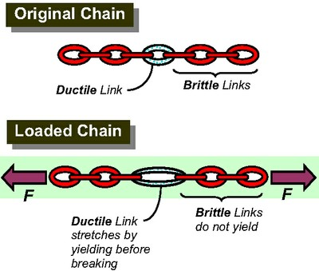
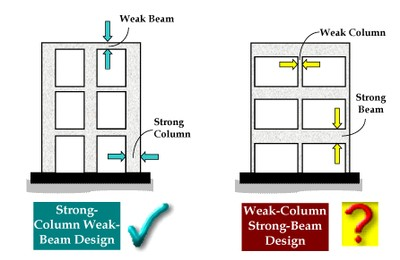
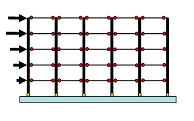
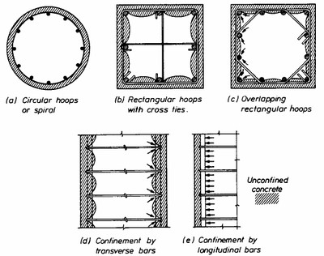
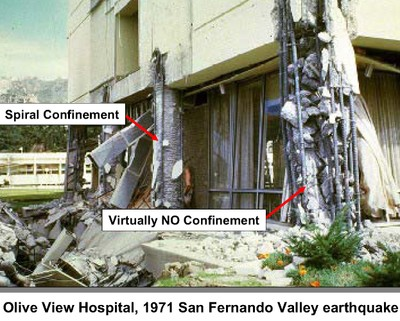
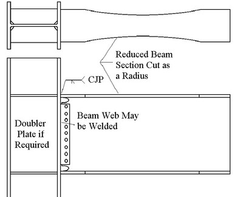
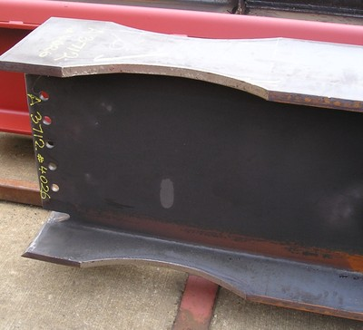
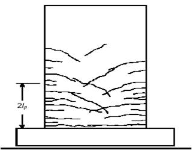

Dúctil [DUC]
La estructura incorpora un diseño dúctil, donde los miembros de acero o de refuerzo están diseñados para sufrir deformación plástica en situaciones de sobrecarga antes de la falla bajo cargas sísmicas de los elementos estructurales o de sus conexiones. La ductilidad se consigue tanto al proporcionar jerarquía a la resistencia de algunos miembros en un sistema estructural (conocido como Capacity Design Approach) , así como por el despiece especial de los miembros. Por ejemplo , pórticos dúctiles tendrán columnas más fuertes que las vigas y el despiece de la fuerza cortante evitará las roturas por corte de vigas y columnas que se producen antes de la flexión de cedencia.

El objetivo principal del enfoque del diseño basado en capacidad es asegurar que los edificios se comportan de manera dúctil , es decir, para evitar la rotura frágil y colapso en los terremotos. El diseñador necesita seleccionar los componentes estructurales en los que se pueden esperar extensa deformación y daños , mientras que la parte restante de la estructura debe permanecer lo suficientemente fuerte o lo suficientemente flexible, para mantener estas fuerzas y deformaciones. Esto se puede explicar en un ejemplo de una cadena, donde los enlaces dúctiles representan lugares en los que se espera deformaciones plásticas importantes (enlaces dúctiles ) , mientras que los enlaces frágiles representan otros componentes estructurales . Por ejemplo, en un marco de hormigón armado se esperan extensas deformaciones en las vigas ( análogos a las conexiones dúctiles ) , mientras que las columnas tienen que seguir siendo fuertes (similar a conexiones frágiles) (illustration by C.V.R. Murty, Earthquake Tip 9, NICEE, India)

Uno de los requisitos de diseño para el rendimiento dúctil de pórticos de hormigón armado es garantizar el concepto Columna fuerte- vigas débil, en el cual las vigas deben ser los eslabones más débiles (C.V.R. Murty, Earthquake Tip 9, NICEE, India)

Rótulas plasticas (señaladas en rojo) son lugares en un sistema de pórticos de momento concreto armado o acero donde se espera que tengan lugar las deformaciones y daños significativos durante un gran terremoto (FEMA 451B, 2006)


Requisitos especiales al reforzamiento (despiece) son fundamentales para el rendimiento dúctil de pórticos hormigón armado. El confinamiento se suministra por el refuerzo estrechamente espaciados, generalmente en forma de aros o lazos . Pórticos de hormigón armado con columnas confinadas adecuadamente tuvieron un buen desempeño en los terremotos del pasado (illustrations: FEMA 451B)


El comportamiento dúctil de estructuras de pórticos metálicos resistentes a momento se puede lograr utilizando vigas de sección reducida ( también conocida como conexión dogbone ) . Este tipo de conexión consiste en recortar una porción de la brida de la viga de acero en la región adyacente a la conexión de viga a la columna ; este tipo de conexión actúa como un fusible dúctil, y que obliga a que la cedencia ocurra dentro de la sección reducida de la viga ; ver una viga en forma de I con conexión dogbone listo para la construcción, Canada (drawing: FEMA 355D, photo: S. Brzev)

Muros de hormigón armadowalls con una apropidada cantidad de refuerzo y despiece se espera que tengan un comportamiento sísmico dúctil. (FEMA 306, 1999)